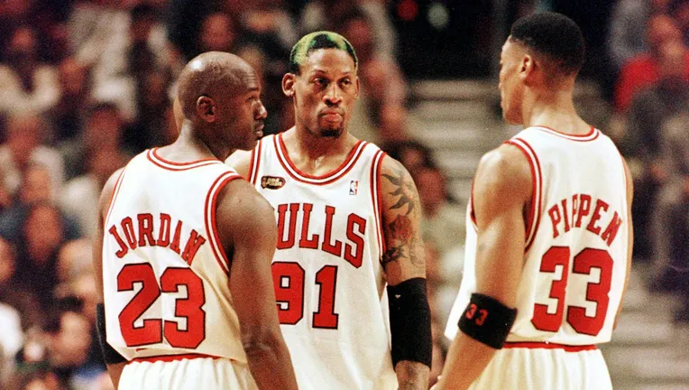

JUGAR VIDEO JUEGOS.
Lo es porque alimenté este habito desde muy niño, crecí con ello y aún a mi edad (no soy viejo jaja) me sigue apasionando los video juegos.
Tengo bastantes, tanto actuales como juego que ya no consumo pero que tienen un valor sentimental para mi.
| JUEGO | TIEMPO DE JUEGO | IMPORTANCIA (0/10) | CATEGORIA | ¿LO JUEGO ACTUALMENTE? |
|---|---|---|---|---|
| Efootball | Diario | 10 | SIMULACIÓN DEPORTIVA | SI |
| Free Fire | Diario | 9 | BATTLE ROYALE | SI |
| Need For Speed | Muy Poco | 6 | CARRERAS O ARCADE | NO |
| GTA V | Usualmente | 8 | MUNDO ABIERTO | SI |
No suelo hacer mucho deporte, casi nunca lo hago (solo con la cuchara jajaja) pero digamos que me apasionan 2 en especifico:
Desde niño me apasionó este deporte pero nunca me terminó de apasionar ponerlo en práctica, quizá me una a jugar un partido con amigos en una cancha, pero no significa que sea una pasión jugarlo, me apasiona más verlo en mis equipos favoritos, ligas de interés o en general estar al tanto sobre lo que pasa en el mundo de este deporte.
Me apasiona más por el hecho de que tengo idolos de este deporte como lo es Jordan cuya dorsal famosa (la número 23) es mi edad actual, así la uso como amuleto (por lo menos este año jaja), tambíen tengo a un referente que compartió con Jordan que es conocico como el "Bad Bunny de los 90", su nombre DENNIS RODMAN, Defensa Leyenda de los Chicago Bulls y emblema de estilo con sus autenticos "looks" de cabello, el junto a Jordan y Scottie Pippen hicieron el tridente más temido del baloncesto en su momento, era como la MSN del FC Barcelona pero del baloncesto.

Como ya he mencionado en mis anteriores hobbies no soy una persona de un gusto puntual, por lo general tengo gustos mixtos. Las peliculas no son la excepción, me gustan de muchos generos pero me gusta más en especifico el género de terror, más sin embargo para este tiempo considero que si tengo una saga de peliculas que me atrajo bastante siendo esta....